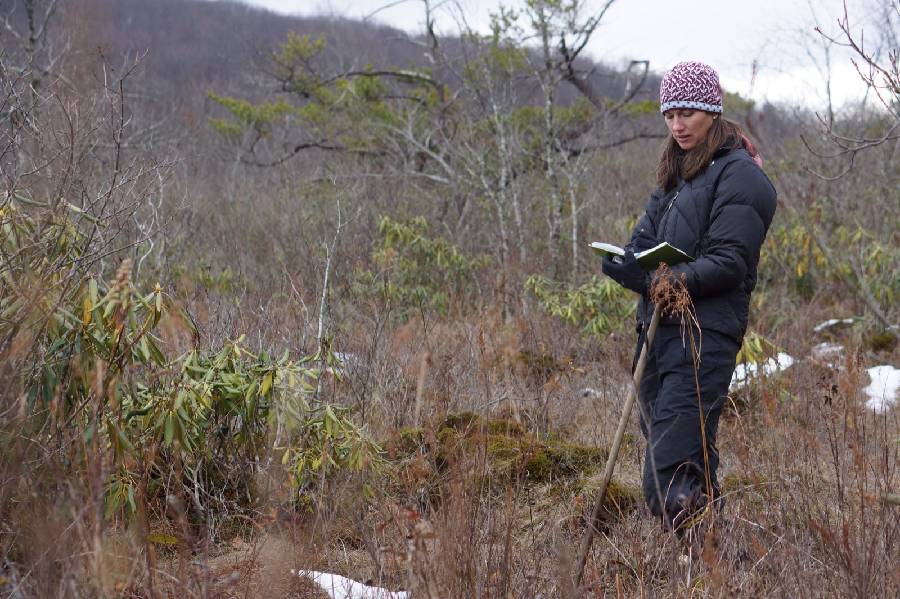

Executive Summary
Nature put the reverse question to its scientist readers. Now that AI reaches into nearly every stage of science, from forming hypotheses to running analyses and drafting papers, what is the one thing you would never hand over? The answers came from wildly different fields, yet they converged on a strikingly narrow place: the primary data gathered by hand in the field, the writing and peer review done by oneself, and the experiment design that starts from curiosity.
That these choices are more than attachment is what other research from the same period supplies. On one side, an analysis shows people coming to resemble the chatbot's style and reasoning until their expression grows uniform; on the other, early measurements show that leaning on AI can actually erode a person's competence. The list scientists said they would protect is precisely the ground that homogenization creeps into and that deskilling takes away.
This piece rereads that list through the lens of data. The work people deliberately keep for themselves is where data AI cannot make in their place is born, and the wider automation spreads, the scarcer that source becomes.
Key figures
Source: Nature — Is AI ruining our skills? (2026-06-18)
The three figures below show that "I won't hand it over" is not just a feeling. In clinical settings, a majority already worry about losing competence, and Anthropic has begun moving the same question into a controlled experiment to measure the change directly.
77%
Physicians worried about skill loss
Share who said over-reliance on AI is eroding their own competence
70%
Nurses with the same worry
The scale of deskilling anxiety across clinical work
52
Engineers in a deskilling trial
Number Anthropic measured for competence change in a randomized control
The Question Nature Flipped Around
The debate over what AI can replace in science is already familiar. Chatbots have long reached into summarizing literature, writing code, running statistics, and polishing abstracts. Then, in the summer of 2026, Nature reversed the direction of the question. It asked the scientists who read its Briefing: "As AI tools take over more and more of the stages of science, what is the one thing you would never hand over?"
This is a question not about what can be automated but about what one refuses to automate. Because the person answering has to draw the line themselves, the replies carried whatever each of them most wanted to protect across a research life. The editors pulled together those responses and published them with names and affiliations attached.
When the direction of the question flipped, what surfaced was not the boundary of capability but the boundary of value. Asked not "can AI do this?" but "will I hold on to it anyway?", scientists pointed, in their own words, to which parts of their work are an irreplaceable source.
Five Answers, Three Reasons
The respondents' backgrounds were all over the map: a physician in Brazil, a field researcher in Beijing, a graduate student in Istanbul, a scientist who studies the deep sea. Yet the work they said they would not hand over converged into three strands: the primary data collected by hand in the field, the writing and peer review that train thinking, and the experiment design that comes out of curiosity.
2.1Primary data gathered by hand in the field
Mengchao Liao, in Beijing, said he would keep primary data collection, field observation, and face-to-face interviews for himself. His reason: this is work that calls for empathy, on-the-spot improvisation in the field, and skilled in-person communication. An algorithm cannot set foot on the actual ground and draw up genuine primary material, and so this part, at least, was the line he would never delegate.

2.2The writing and peer review that train thinking
Anna Hodshire, in Colorado, said she has no intention of handing writing and peer review to a chatbot. The act of writing itself exposes the places she does not yet understand; reviewing others' papers is where critical thinking gets sharpened; even a tedious email is practice that keeps her communication skills alive. It was a choice to protect not the output but the thinking that happens inside her while she does the work.
2.3The experiment design that comes from curiosity
Müleyke Özçakmak, who studies AI and consciousness in Istanbul, found the most thrilling moments of research in holding curiosity, discovering unexpected connections, and challenging existing assumptions. Those, she said, come from conversations with mentors, debates with peers, and solitary reflection, not from an algorithm.
The same instinct runs through the other replies. One deep-sea scientist named the thrill of inspiration and discovery, and the creativity of designing an experiment, as what they could never quite give up. Henrique Falcetto de Barros, a physician in Brazil, conceded that for a patient's benefit a doctor should hand over what AI does better, yet hoped not to surrender the human touch, curiosity-driven research, and the joy of building something together.
The three strands are not a loose list. Observation in the field, the training of thought, and creative judgment all arise only when a person collides directly with the world. Scientists were not denying the convenience of automation; they were pointing to the places convenience cannot replace.
Exactly Where Homogenization Aims
Why these three strands in particular? Another study lights up the answer from the side: the homogenization research Nature covered the same year. Zhivar Sourati and colleagues at the University of Southern California pointed out that the longer people interact with an LLM, the more they come to resemble its style, its perspective, and its way of reasoning, until at some point that converged mode of expression starts to feel like the more socially correct way to communicate.
This is not mere conjecture. The researchers analyzed Reddit posts, news, and preprints from before and after ChatGPT's 2022 arrival and confirmed that the text had grown stylistically less diverse. In one experiment, participants who talked with an LLM that voiced a particular opinion found their own opinion drifting toward that LLM afterward. Not only expression but judgment gets pulled along.
Here the two lists overlap. What homogenization eats away first is personal style, a perspective unlike anyone else's, and the habit of questioning assumptions. But those are exactly the capacities scientists said they would keep: writing, peer review, curiosity-driven experiment design. Their list turns out to be a map that marks, in advance, the very ground homogenization creeps into. There are dissenting voices, of course. The same coverage carried the counterargument that not everyone becomes homogenized, and the point that AI may in fact help people write better and be understood better. The pressure of homogenization and the choice to resist it are locked together in the same moment.
The line scientists drew was not laid down by accident. It overlaps with a defensive perimeter around the capacities homogenization erases first: one's own style, one's own perspective, one's own doubt.
Evidence That Handing It Over Erodes You
The evidence that "I won't hand it over" is calculation rather than sentiment is filled in by a third body of research: early measurements showing that handing work over really does cost you something. According to the deskilling studies Nature assembled, in a survey of U.S. healthcare workers 70% of nurses and 77% of physicians worried about losing competence to over-reliance on AI. That is a signal that the concern is not confined to one profession but has spread across the field.
There are measurements that go beyond worry. Anthropic gave 52 software engineers a basic coding task, allowed all of them web search and documentation, but let only half use an AI assistant, in a randomized controlled trial. It was a way of examining, under controlled conditions, what dulls as the price of convenience. Kevin Crowston, at Syracuse University, said that simply being aware of the phenomenon prompts people to reflect on which skills to keep and which to leave to AI. Yuichi Mori, at the University of Oslo, was more cautious: confirmatory studies are still needed, but AI users must recognize the risk of skill loss, and because there is no established remedy for deskilling yet, it will be one of the hottest research topics of the coming decade.
This makes clear why the scientists' list is composed the way it is. The writing, the reviewing, the field judgment they said they would keep are all capacities that are hard to regain once you let go of them. Handing them over makes life easier in the moment, but once that ease accumulates, later, when you try to do it yourself, you can no longer do it as well as before. Voluntarily setting a boundary was a decision to prevent that loss in advance.
The deskilling evidence lifts "I won't hand it over" from emotion to strategy. Hand it over and you really do lose something, and the lost capacity does not come back easily. Deciding in advance what to protect is therefore not a luxury but management.
The List Humans Keep Is a Map of Source Data
Now translate this list into the language of data. Observations and interviews done by hand in the field are primary data not yet recorded anywhere in the world. A review or a text written by a person carries that person's own grounds for judgment. Experiment design that starts from curiosity produces new observations drawn from a question no one has yet asked. All three strands are a source that AI, however well it recombines existing data, cannot generate in a person's place.
AI learns from data that already exists and answers within that distribution. New signals outside the distribution — observations and judgments that did not yet exist in the world — arise only when a person collides directly with reality. This is exactly why homogenization is dangerous. If everyone leans on the same tools and converges on the same style and judgment, even the data the model learns from next grows alike. Data that has lost diversity loses the power to yield new discoveries. The ground scientists protected with their own hands is the last supplier of that diversity.
So this list should be read not as a residue left on the far side of automation but as a map of where the scarcest and most valuable data is born. Choosing what to automate matters, but so does deciding what to keep in human hands so that source data keeps getting made. If the quality and diversity of data ultimately set the ceiling for AI, then the decision to protect that source is a matter of infrastructure, not sentiment.
To close: the list of work scientists refused to hand to chatbots is also a list of the data AI cannot make in their place. The wider automation spreads, the scarcer that source becomes, and deciding where to keep it is the core of data strategy for the coming era.
References
- 1.Wilson, S. (2026). "Don't let AI steal all the joy: what scientists won't give up to chatbots." Nature (2026-07-21). — Survey of Nature Briefing readers. The work scientists said they would not hand to AI converged on primary field data collection, writing and peer review, and curiosity-driven experiment design.
- 2."AI can 'same-ify' human expression — can some brains resist its pull?" Nature (2026-03-11). — Homogenization: style, perspective, and reasoning converge the longer people interact with an LLM. Text analysis from before and after ChatGPT's launch confirms declining stylistic diversity.
- 3.Sourati, Z., Ziabari, A. S., & Dehghani, M. (2026). "The homogenizing effect of large language models on human expression." Trends in Cognitive Sciences. — The opinion paper underlying Nature's homogenization coverage. Describes the convergence mechanism by which people come to resemble an LLM's expression and reasoning and to feel it is the more correct mode of communication.
- 4."Is AI ruining our skills? Early results are in — and they're not good." Nature (2026-06-18). — A collection of early research on how over-reliance on AI degrades competence. 77% of physicians and 70% of nurses worried about skill loss; Anthropic ran a randomized controlled trial with 52 engineers.